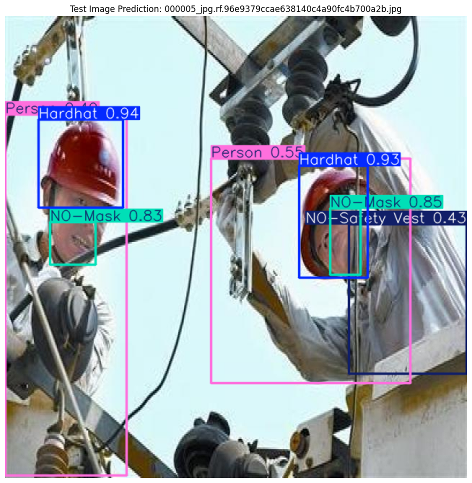

Object_Detection_for_Safety_Compliance_on_Construction_Sites
Overview
The project investigates the idea of object detection of safety compliance items (PPE gear) at construction sites using labeled image data. The goal is to effectively identify whether workers are wearing proper safety (PPE) gear when working on construction sites.
Key Components
| Component | Details |
|---|---|
| Safety Challenge | Manual safety monitoring on New Zealand construction sites is slow, error-prone, and costly, increasing the risk of accidents and legal liabilities. |
| Dataset | Kaggle “Construction Site Safety Image Dataset” (2,605 images at 640×640), annotated for 10 PPE-related classes (e.g., Hardhat, Vest, Mask). |
| Detection Model | YOLOv9 with a CSPDarknet backbone and anchor-free detection, selected for fast, accurate localization of varied PPE sizes. |
| Training Details | • Fine-tuning with normalization (70 epochs, LR 1e-3, batch 16) • Optional oversampling to balance underrepresented classes (50 epochs to prevent overfitting) |
| Evaluation Results | mAP@0.5 ≈ 0.89; high precision/recall on key classes (Mask 0.95, Vest 0.93); underperformance on underrepresented classes (NO-Mask, Vehicle). |
| Deployment Considerations | Real-time inference speed requirements; continuous data collection and re-training; choice of edge vs. cloud deployment; compute and maintenance costs. |
| Project Impact | Automated PPE detection and tracking model that reduces accident rates, lowers operational costs, and improves compliance on construction sites. |

Test Image Analysis
First Test Image: The model finds one person and correctly labels their hardhat (0.93), mask (0.94), and safety vest (0.95). All items overlap only slightly, showing the model can spot multiple PPE pieces at once.
Second Test Image: There are two workers. The model detects both hardhats (0.94 and 0.93) but flags “NO-Mask” (0.83 and 0.85) and “NO-Safety Vest” (0.43) for each. Lower confidence on the person (0.55) and vest shows it struggles a bit in cluttered, busy scenes.
Demonstration
Summary
- 🚧 Automated PPE Detection – Identifies helmets, vests, masks, and other safety gear in real time to improve construction site compliance.
- 🖼️ Vision-Based Monitoring – Utilizes YOLOv9 with a CSPDarknet backbone for fast, accurate localization and classification of varied PPE items.
- 📊 High-Accuracy Performance – Achieves mAP@0.5 ≈ 0.89, with strong precision/recall on key classes (Mask 0.95, Vest 0.93) and reliable detection even in crowded scenes.
- 📈 Balanced Training Strategy – Fine-tuned on a 2,605-image Kaggle dataset (640×640), employing normalization and optional oversampling to address class imbalance.
- ⚙️ Real-Time Deployment Ready – Optimized for edge/cloud inference, ensuring low latency for on-site monitoring and rapid feedback loops.
- 🔄 Continuous Improvement Loop – Incorporates ongoing data collection, re-labeling, and retraining to adapt the model to new environments, reducing false positives and missed detections.